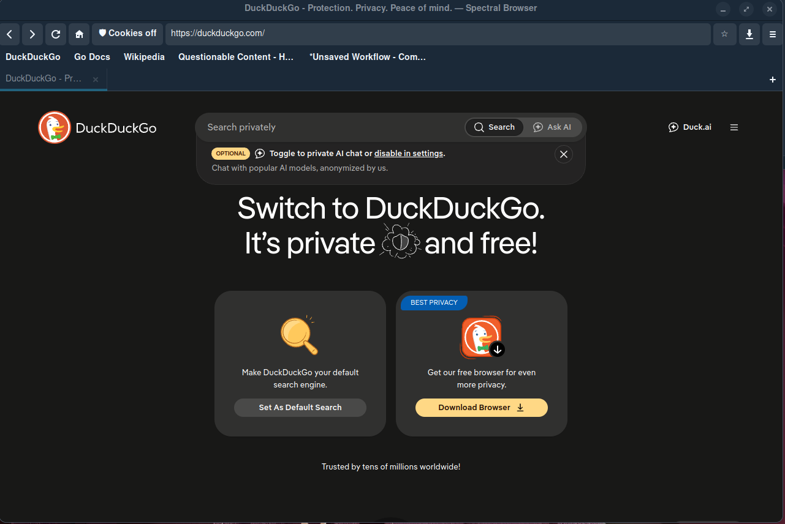
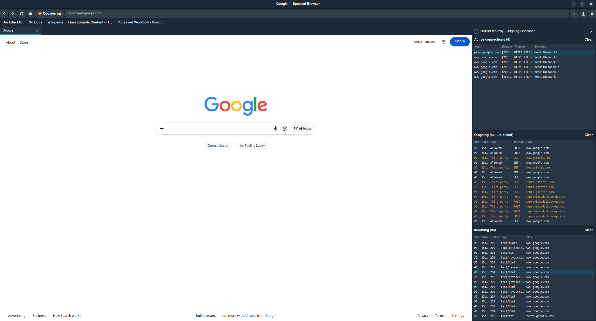
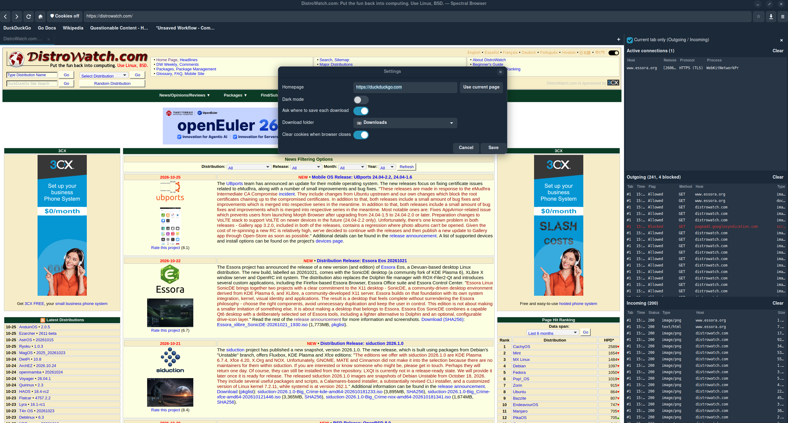

About
Spectral Browser is a small, privacy-minded web browser for Linux, written by Philip Orona in Go with a GTK 3 interface and the WebKit2GTK 4.1 engine. It runs on everyday amd64 desktops (Pop!_OS 24.04) and on arm64 devices like the PineTab2, where it comes preinstalled in the Arrow Silver PineTab2 image.
The idea is simple: block the junk by default and show you what's really happening. Trackers and ads are stopped before they load, pages stay on HTTPS, cookies stay off until you allow them for a site, third-party cookies are always blocked, and everything is wiped when you close the browser. When you're curious, press F8 and the Ghost Panel shows every connection a page makes, live.
- Ghost Panel (F8): a live network monitor that runs only while open
- Tracker and ad blocking (nearly 95,000 hosts from EasyPrivacy and EasyList)
- HTTPS-only browsing
- Per-site cookie toggle, with cookies cleared on close
- Bubblewrap-sandboxed web process; WebRTC and DNS prefetch off
- Simple settings: homepage, dark mode, download folder, ask where to save
- Downloads manager (Ctrl+Shift+Y) and save pages as HTML or complete .mhtml
- Google sign-in bar: one click allows cookies for Google so sign-in works
- Private windows, tabs, favorites bar and DuckDuckGo search
Overview
Spectral Browser is a small desktop web browser focused on privacy. Current version: 1.3.4 (2026-11-02).
Screenshots



Platform & engine
| Part | Details |
|---|---|
| amd64 | Pop!_OS 24.04 / Ubuntu 24.04 |
| arm64 | PineTab2 / Arrow Silver ARM64 (built in a Debian forky arm64 chroot) |
| Engine | WebKit2GTK 4.1 (2.52.6 on Pop 24.04); GTK 3 UI |
| Code | Go 1.22, plus a C WebKit web-process extension (libspectral-ext.so) |
| Sandbox | Web process sandboxed with bubblewrap |
| Dependencies | libc6, libglib2.0-0t64, libgtk-3-0t64, libsoup-3.0-0, libwebkit2gtk-4.1-0, libjavascriptcoregtk-4.1-0, bubblewrap, xdg-dbus-proxy (installed by apt) |
Features
- Ghost Panel (F8): open with F8, ☰ → Ghost Panel, or
--ghost. A docked traffic monitor listing Active connections, Outgoing (Blocked / Third-party / Allowed / Download) and Incoming. It monitors only while open and writes nothing to disk. - Tracker and ad blocking: nearly 95,000 hosts from EasyPrivacy and EasyList
- HTTPS-only mode with a per-session HTTP fallback bar
- Third-party cookies blocked, Intelligent Tracking Prevention on, per-site cookie consent (🛡/🍪), all cookies cleared on close by default
- Google sign-in via the “Allow cookies for Google” bar
- Permission prompts (camera, mic, location, and others) denied unless you allow them; WebRTC and DNS prefetch off
- Private windows and Clear browsing data
- Tabbed browsing with full keyboard shortcuts
- Downloads: save dialog, progress bar, Downloads window (Ctrl+Shift+Y), no silent overwrites; save pages as HTML or
.mhtml - Editable favorites bar, homepage setting, dark mode (on by default), DuckDuckGo search from the address bar
- Command-line options:
--ghost,--debug,--version
What's new in 1.3.4
- Security update: built with Go 1.27.3 and
golang.org/x/netv0.62.0, fixing HTTP/2, TLS, X.509 and HTML parser (XSS) vulnerabilities.govulncheckis clean. See the changelog. - 1.3.3: right-click → Open Link in New Tab asked to save the link as a file. Each custom menu item now has its own action.
- Earlier: 1.3.2 (lighter cache, cheaper Ghost Panel refresh); 1.3.1 (Google sign-in fix, cookies cleared on close, Ghost Panel monitors only while open)
Install guide
- amd64 (Pop!_OS / Ubuntu 24.04):
sudo apt install ./spectral-browser_1.3.4_amd64.deb
- arm64 (for example, PineTab2):
sudo apt install ./spectral-browser_1.3.4_arm64.deb
This upgrades older versions in place. Uninstall with sudo apt remove spectral-browser. Settings stay in ~/.config/spectral-browser/, ~/.local/share/spectral-browser/ and ~/.cache/spectral-browser/.
Troubleshooting
- Blank pages:
WEBKIT_DISABLE_COMPOSITING_MODE=1 spectral-browser - See traffic in the terminal:
spectral-browser --debug
Build from source
Requires Go 1.26 or newer (releases are built with Go 1.27.3) and the WebKit2GTK 4.1 / GTK 3 development packages. Uses the Makefile:
make build # Go binary + bin/ext/libspectral-ext.so make run make test make deb # VERSION=1.3.4 ./packaging/build-deb.sh sudo VERSION=1.3.4 ./packaging/build-arm64.sh # arm64 package
Source code: github.com/vmphil/spectral-browser
Known limitations
- No fingerprinting protection (WebKitGTK has no setting for it); WebGL is left on
- First-party analytics and unlisted trackers aren't blocked (whole-host rules only)
- Local storage and IndexedDB on sites you haven't allowed aren't purged until close or Clear browsing data
- WebKit 2.52 ignores the switch to turn off
<a ping>; pings to listed trackers are still blocked - Private windows don't hide your IP address or DNS lookups
- With clear-on-close on (the default), logins don't survive a restart
- Tabs have no favicons, can't be dragged between windows, and closed tabs can't be reopened
- The download list lasts for the session only; Save page as HTML only downloads the page again (use
.mhtmlfor an exact copy)
Download
Download from the v1.3.4 GitHub Release: spectral-browser_1.3.4_amd64.deb (x86-64) or spectral-browser_1.3.4_arm64.deb (ARM64). What changed: see the Changelog.
| File | Size | SHA-256 |
|---|---|---|
spectral-browser_1.3.4_amd64.deb | 2,758,406 bytes (~2.76 MB) | f8df8744eb6c9552e75c14ef49cef62a34c601d8fdeecc8d07e33bee2a4a2be6 |
spectral-browser_1.3.4_arm64.deb | 2,353,860 bytes (~2.35 MB) | 718058cede6fce8e1be30675233ab74ff84a08558c3cb5874eb3cf50c3320cea |
sha256sum spectral-browser_1.3.4_amd64.deb
Android
Download from the Android 1.4.2 GitHub Release: spectral-browser-1.4.2-android.apk. If you installed an earlier debug APK, uninstall it first.
| File | Size | SHA-256 |
|---|---|---|
spectral-browser-1.4.2-android.apk | 15,599,050 bytes (~15.6 MB) | f4ede6aa0415db5706ff9517a4bc6ac2a4632d3e34df2b37f7c048cd1de6c276 |
Previous versions
| File | Size | SHA-256 |
|---|---|---|
spectral-browser_1.3.3_arm64.deb | 2,351,008 bytes | 9e7bf0e754f27853571e6c1bf6b890732ce95fa572576c3948babcfc79e46c0b |
spectral-browser_1.3.3_amd64.deb | 2,752,352 bytes | 9b3cc665b2d5f5eafe714b0b15ff5d1bcc2a6cda8031e40c35448638f384dfa7 |
spectral-browser_1.3.2_arm64.deb | 2,350,104 bytes | 67caacd10f891db9240940a5403e41cf663ae6b7013015c1e2aec7e6b224b71c |
spectral-browser_1.3.2_amd64.deb | 2,751,822 bytes | 8864a5ffbc094f0b6a802e69354f8dd641d2b6beb856312ea9b55f5485b69e3c |
spectral-browser_1.3.1_amd64.deb | 2,750,298 bytes | 550ed9af431327e994e3674c1864a1b157ca1cd530257cac47f599bd069a1a95 |
spectral-browser_1.3.0_amd64.deb | 2,744,654 bytes | ad85bf1aae18d1ff23d75dd010b6c0e9601d04bc92bdea32b7af78902cdfe018 |
spectral-browser_1.2.0_amd64.deb | 2,184,068 bytes | 0d66fd228f9cc73af6bbdc1c8bf8aeec9c0e287d8db17ed8bc15db10a12a39bb |
spectral-browser_1.1.0_amd64.deb | 616,560 bytes | fcf9d00c36523c74c6935b671ba86e6aeb36e93c8a58af113735c0a24c94fae8 |
Changelog
Full history is also in CHANGELOG.md.
Android 1.4.2 - 2026-11-04
Changed
- Library upkeep: OkHttp 5.5.1,
androidx.webkit1.18 and other AndroidX updates; targetSdk 36 (Android 16). - First signed release build. Earlier 1.4.x APKs were debug builds. If you installed one, uninstall it first (
adb uninstall org.spectralbrowseror from the phone); this clears its tabs and settings.
1.3.4 - 2026-11-02
Security
- Built with Go 1.27.3 (was 1.27.1). Picks up the Go standard library fixes in
net/http, HTTP/2,crypto/tls,html/templateandcrypto/x509. golang.org/x/netupdated from v0.30.0 to v0.62.0. Fixes the HTML parser cross-site scripting and denial-of-service advisories and the HTTP/2 advisories.govulncheck ./...now reports no vulnerabilities (it found 28 reachable ones in 1.3.3).- No feature changes.
1.3.3 - 2026-10-25
Fixed
- Open Link in New Tab asked to save the link as a file. All right-click items Spectral adds shared one action name, so WebKit ran Save Link As… for each of them. Each item now has its own action.
1.3.2 - 2026-10-13
Changed
- Lighter page cache. WebKit now uses the document browser cache model instead of web browser: smaller in-memory resource/decoded-image cache and disk cache, while still keeping a small back/forward page cache so Back/Forward stay quick.
- Ghost Panel refresh is cheaper while open. Rows are batched every 1 s (was 0.5 s) and the connection scan runs every 2 s (was 1.5 s). The Active connections list is updated in place (changed rows only, extras trimmed) instead of being cleared and rebuilt, and the section headers are only redrawn when something changed. With the panel closed there is still no timer, scanner or reporting at all, and opening it refreshes immediately.
1.3.1 - 2026-10-12
Changed
- Ghost Panel monitoring runs only while the panel is open. Opening it (F8, ☰ → Ghost Panel,
--ghost) starts the/procconnection scanner, the host-name lookups, the 0.5 s row timer and the web extension's per-request reports. Closing it (F8 or the new × button) stops them all and frees every row, counter and host/IP cache; the row lists are destroyed, not hidden. The extension keeps blocking trackers while the panel is closed, it just stops reporting. - Lists keep 300 rows each (was 500), and the IP-to-host and lookup caches are capped at 2,000 entries.
- Clear cookies when browser closes (new Settings switch, on by default) deletes every cookie, including allowed sites, when the last window closes and again at start-up (in case of a crash). The list of allowed sites is kept. Local storage, IndexedDB, service workers and cache storage of sites you haven't allowed are deleted as well.
Fixed
- Google sign-in showed "Something went wrong" on accounts.google.com: the per-site cookie rule stripped Google's cookies. Google's domains (google.com, gmail.com, youtube.com, gstatic.com, googleusercontent.com, googleapis.com, googlevideo.com, ytimg.com, ggpht.com, withgoogle.com) now share one cookie choice, and the sign-in page shows an Allow cookies for Google bar while cookies are off. Tracker blocking is unchanged.
Notes
- No Ghost Panel data is written to disk.
--debugprints traffic to stderr only.
1.3.0 - 2026-10-08
Fixed
- Downloads didn't save. The browser had no download handling, so it used WebKit's defaults: a page response WebKit can't display (zip, exe, iso,
application/octet-stream, ...) was silently ignored, and onlyContent-Disposition: attachmentfiles and the stock right-click "Download Image" went to~/Downloads, with no dialog, progress or message, so they looked like failures too. Responses that can't be shown and attachments now download (error pages and empty 204/205 responses don't).
Added
- Downloads - A save dialog for each download (setting: Ask where to save each download, on by default), or straight into the download folder (setting: Download folder, default: XDG Downloads). - Never overwrites without asking: automatic saves pick
name (1).extand so on, and the dialog confirms before replacing. Suggested names are cleaned (no paths, leading dots or control characters). - A downloads bar in the window (progress, Open, Show in folder, error text) and a Downloads window (Ctrl+Shift+Y, ⬇ toolbar button or ☰ menu) listing this session's downloads with Open, Show in folder, Cancel and Clear finished. - Right-click menu: Save Image As…, Download Image, Save Link As…, Download Linked File, Open Link in New Tab / Window, Open Image in New Tab, and Save Page As… on the page. - Save page (Ctrl+S): HTML only or a complete.mhtmlweb archive. - Downloads work in private windows, and are logged in the Ghost Panel (blue Download rows in Outgoing, the response in Incoming). - Closing the last window waits for running downloads (the Downloads window stays open). - Tabbed browsing - Tabs in every window (one web view each, sharing the window's settings, cookie rules and session; private-window tabs share the private session). Each tab shows a loading spinner, the page title and a close button, and tabs can be dragged to reorder. - + button and Ctrl+T (opens the homepage), Ctrl+W (closing the last tab closes the window), middle-click a tab to close it. - Ctrl+Tab / Ctrl+Shift+Tab, Ctrl+PgDn / Ctrl+PgUp, Ctrl+1…8, Ctrl+9 (last tab). - Middle-click or Ctrl+click a link, or Open Link in New Tab, opens a background tab.
target="_blank"links and click-triggeredwindow.open()open a tab next to the current one; pop-ups without a click are still blocked. A tab opened only to download a file closes itself again. - Address bar, back/forward/reload, cookie button, ☆, HTTPS fallback bar and window title follow the active tab. - Ghost Panel: a Tab column (#n, shown when you hover a tab) and a Current tab only filter. - Shortcuts: Ctrl+N new window, Ctrl+Shift+N private window, Ctrl+R / F5 reload, Alt+Left / Alt+Right back / forward. Favorites: middle-click or right-click → Open in new tab.
- Config keys
ask_where_to_save(defaulttrue) anddownload_dir(default empty = XDG Downloads). Older config files keep working.
Known limits
- Tabs have no site icons (favicons): WebKitGTK only provides them through an on-disk icon database that would keep a list of sites you visit.
- Tabs can't be dragged between windows, and closed tabs can't be reopened.
- The download list lasts for the session only.
- Save page as HTML only downloads the page again rather than saving what's on screen. Use the
.mhtmloption for an exact copy.
1.2.0 - 2026-10-07
Added
- Ghost Panel (F8 or the ☰ menu): a resizable panel on the right with three sections. - Active connections: host, IP:port, protocol and process, refreshed every 1.5 s. - Outgoing: time, flag, method, host and type. Blocked rows are red and third-party rows are orange. - Incoming: time, status, content type, host and size. - Each list keeps up to 500 rows and has a count and a Clear button. The panel remembers its width.
- Tracker blocking: about 95,000 tracker and ad hosts from EasyPrivacy and EasyList, blocked when loaded from another site (WebKit extension
libspectral-ext.so). Runmake blocklistto refresh the list. - Per-site cookie consent: a "🛡 Cookies off / 🍪 Cookies on" button by the address bar. Cookies are blocked unless you allow them for that site.
- HTTPS-only mode:
http://is upgraded tohttps://, with a per-host "Load over HTTP for this session" fallback. - Favorites: the ☆/★ button adds or removes the current page, and a favorites bar shows them (right-click to rename or remove).
- Homepage: a Home button, plus a Settings dialog with a homepage field, "Use current page" and a dark-mode switch.
- "Clear browsing data" and "New private window" menu items.
- Command-line flags:
--ghost,--debugand--version. - JSON config at
~/.config/spectral-browser/config.json(folder 0700, file 0600). A broken file is moved aside.
Changed
- Ported from WebKit2GTK 4.0 (2.28.1, from 2020) to WebKit2GTK 4.1 (2.52.6) on GTK3.
- Web content now runs in WebKit's bubblewrap sandbox.
- Third-party cookies are always blocked. Cookies are stored in
~/.local/share/spectral-browser/(0700). - DNS prefetch and WebRTC are off, and pages can't open pop-ups or read the clipboard on their own.
- Permission requests (camera, mic, location, notifications) ask first, with Deny as the default.
- .deb dependencies: libc6, libglib2.0-0t64, libgtk-3-0t64, libsoup-3.0-0, libwebkit2gtk-4.1-0, bubblewrap and xdg-dbus-proxy.
Known limits
- Tracker blocking matches whole hosts only, so some trackers get through and fingerprinting isn't blocked.
- Host names in Active connections are best guesses (shared CDN IPs), and only TCP is shown.
- Sites you haven't allowed can set cookies with scripts for the current session. These are deleted at the next start or exit.
1.1.0 - 2026-10-07
Fixed
- The launcher icon did nothing: the Go build was a console stub with no window. Rewritten in Go with cgo GTK3 and WebKit2GTK, so it now opens a real browser window.
- The
.desktoplauncher now points at the binary that was actually tested.
Added
- Debian package
spectral-browser_1.1.0_amd64.deb(make deb). Read-Me.mdwith version, dependencies and install instructions.
1.0.0
- First version, scaffolded by Goose. It had a console-only Go build and an unfinished C/GTK attempt (kept in
old-c/).
License
Spectral Browser is free software, Copyright (C) 2026 Philip Orona, licensed under the GNU GPL v3.0 or later. The bundled EasyList/EasyPrivacy rules are © The EasyList authors, dual-licensed GPLv3 / CC BY-SA 3.0. See COPYING.md.
Credits
- Created by Vm Phil (Philip Orona)
- WebKitGTK / WebKit2GTK 4.1, GTK 3, GLib, libsoup 3, bubblewrap
- Go;
golang.org/x/netv0.62.0 (BSD-3-Clause; indirect dependency) - EasyList and EasyPrivacy (easylist.to) for the blocklist
- DuckDuckGo is the default search and homepage (no affiliation)